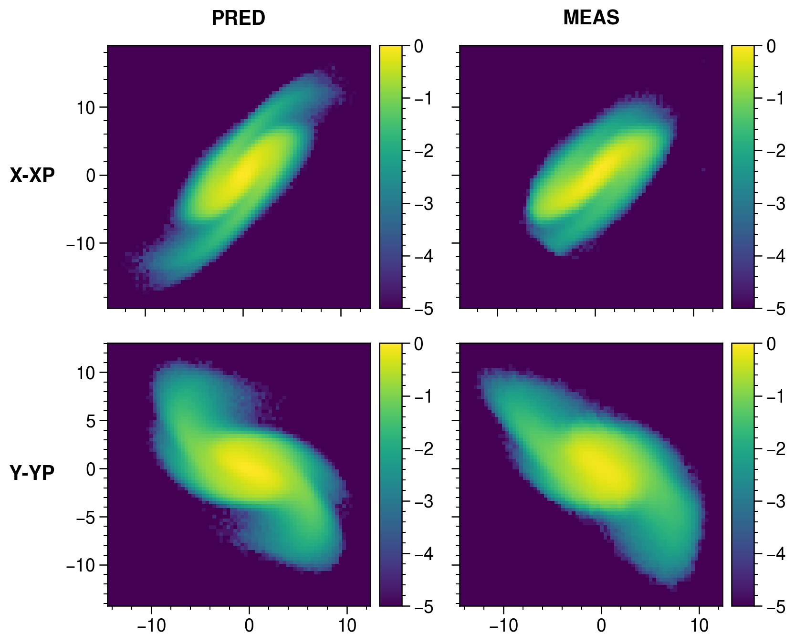
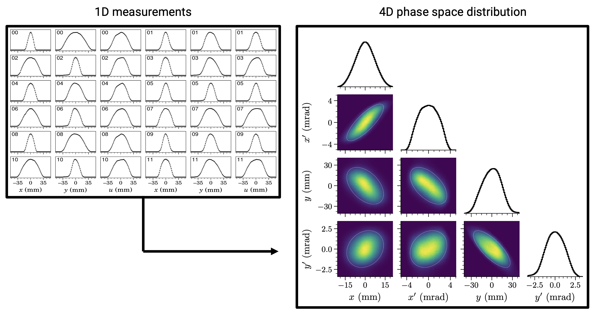
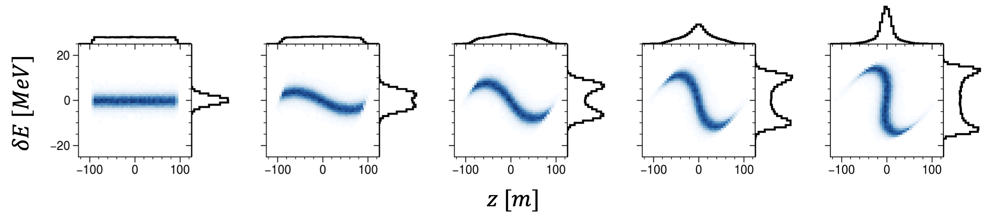
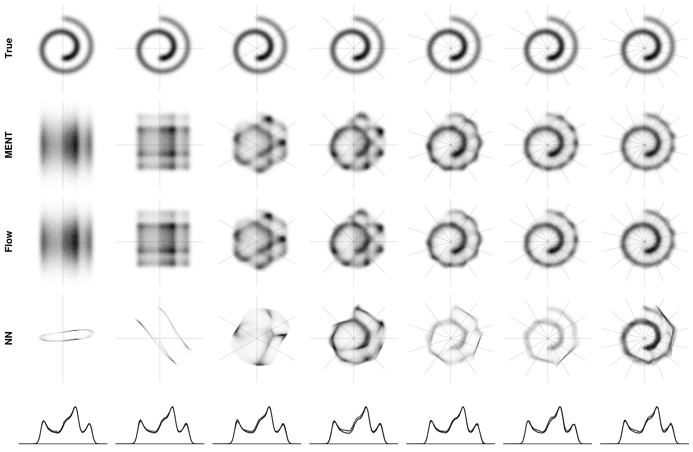

(Also see here.)
Particle accelerators are essential tools for scientific research. For example, hadron accelerators generate neutrons, neutrinos, and muons for experiments in condensed matter physics, material science, nuclear physics, and particle physics; and in the future, hadron accelerators may drive nuclear fission reactors. Many of these applications require hadron beams of enormous density at high repetition rates and with tailored distributions in phase space. Satisfying these constraints at high intensities is a major challenge because of collective effects such as space charge, wake fields, and electron cloud formation, all of which drive multiparticle resonances and instabilities in the beam.
I’m interested in techniques to model, measure, and control intense beams. I currently focus on halo formation in high-power linear accelerators (linacs) and beam shaping techniques in hadron circular accelerators (rings). I’m also interested in applying ideas from probability theory and machine learning to inverse problems in accelerator physics, such as phase space tomography.
Linear accelerators (linacs) generate tight bunches of particles. The combined effects of applied and self-generated fields within the bunch drive some particles to large amplitudes, creating a low-density “halo” surrounding a dense core. Halo is nearly invisible and barely influences the core, but it places hard constraints on the beam power since it leads to beam loss. Halo formation is challenging to predict because of its sensitivity to poorly known model parameters; for example, we typically do not know the initial particle distribution in the full six-dimensional phase space. It is also challenging to measure such a faint signal on top of the bright core.
We are using the Beam Test Facility (BTF) at the Spallation Neutron Source (SNS) to address this problem on a small scale. The BTF is a replica of the first few meters of the 400-meter SNS linac. It is equipped to measure the initial 6D distribution and the output 2D halo distribution. We are leveraging these unique diagnostics to benchmark particle-in-cell (PIC) simulations at a new level of detail and better understand halo formation in linear accelerators. Ultimately, we hope our findings will make an operational impact on the SNS linac, which accelerates bunches from 2.5 MeV to 1.3 GeV over 400 meters.

Our primary method to generate intense beams is to repeatedly inject small pulses from a linear accelerator (linac) into a circular accelerator (ring). Space charge forces drive resonances and collective instabilities in the circulating beam, leading to particle loss. One approach to mitigating space charge is to vary the position and momentum of the injected beam relative to the circulating beam during accumulation; this is known as phase space painting. We’re developing new painting methods to apply to coupled or nonlinear accelerator lattices. One such method, known as eigenpainting, would generate a vortex beam in the ring, where particles swirl inside an elliptical boundary. This phase space distribution would minimize the nonlinear component of the space charge force and potentially increase the beam intensity limit in the accelerator. The beam would also occupy a small volume of the phase space, rendering it useful in the first stage of a high-energy collider.

A future muon collider (MC) would require extremely short, intense proton pulses to generate the initial muon beam. The proposed scheme uses an SNS-style linac and accumulator ring followed by a separate ring to compress the bunch to a few nanoseconds in length. This extreme bunch compression has not been demonstrated in a hadron accelerator. We’re examining whether a similar bunch compression scheme could be tested at the SNS accumulator ring. In addition to benefiting muon collider designs, bunch compression would provide an opportunity to study the beam dynamics in the SNS at a much higher particle density, which will amplify space charge effects, impedances, and electron cloud instabilities.

Classical particles are described by their position and momentum in three-dimensional space. Together, these form a six-dimensional phase space. Direct phase space measurements are not always possible; sometimes we have only partial information, such as the particle density along a single dimension. Still, partial information constrains the unknown phase space distribution, and one may attempt to find a distribution consistent with these constraints. I am particularly interested in applying maximum-entropy and Bayesian methods to this problem to incorporate prior knowledge and quantify uncertainty in the reconstruction.
